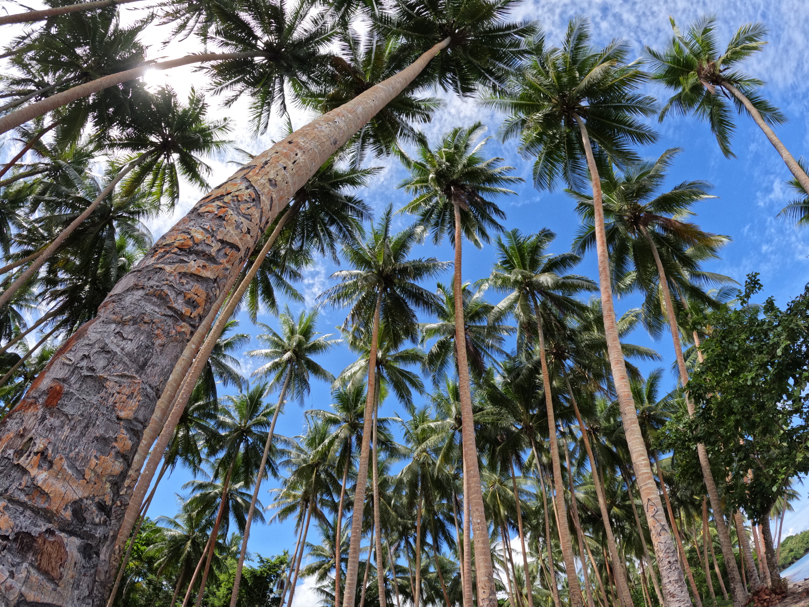
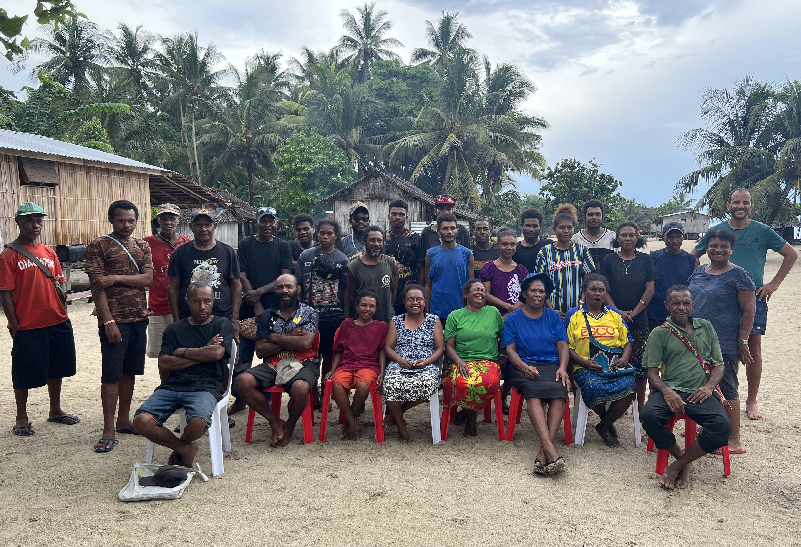

Understanding our mission, our people, and our environment
The Cape Vogel Conservation Association was founded in November 2025 and is currently undergoing registration. The association leads communities across the Cape Vogel Peninsula in addressing environmental degradation and climate change impacts affecting local livelihoods.
The organisation is guided by a core management committee supported by technical advisors, working groups, and a council of elders. This structure ensures that both modern conservation knowledge and traditional leadership are integrated into all activities.
We take a grassroots approach—working one village at a time, one language at a time—with the goal of engaging all 25 communities across Cape Vogel in conservation and sustainable development programmes within five years.

Protect biodiversity and cultural ecosystems
Promote resilience and adaptation strategies
Restore degraded forests and ecosystems
Climate change, population growth, and unsustainable resource use are placing increasing pressure on Cape Vogel’s ecosystems. Coral reefs have experienced severe bleaching events, mangroves and forests are being degraded, and sea level rise is forcing communities to relocate.
These ecosystems are essential for food, water, protection, medicine, and cultural identity. Without intervention, the long-term sustainability of both biodiversity and community livelihoods is at risk.
Cape Vogel Peninsula lies between the d’Entrecasteaux Islands, the Owen Stanley Ranges, Collingwood Bay, and Goodenough Bay.
The region includes mangrove forests, coral reefs, limestone plateaus, valleys, and coastal ecosystems that support both biodiversity and community livelihoods.
View on Google MapsCape Vogel is home to five Austronesian dialects and the Dimuga language, reflecting rich cultural diversity.
Strong traditions of food sharing, cooperation, and cultural identity continue to shape community life.
Young people play a key role in the future but face limited access to education and employment opportunities.
Restoring forest ecosystems and biodiversity
Protecting coastal ecosystems and livelihoods
Rehabilitation and marine conservation efforts